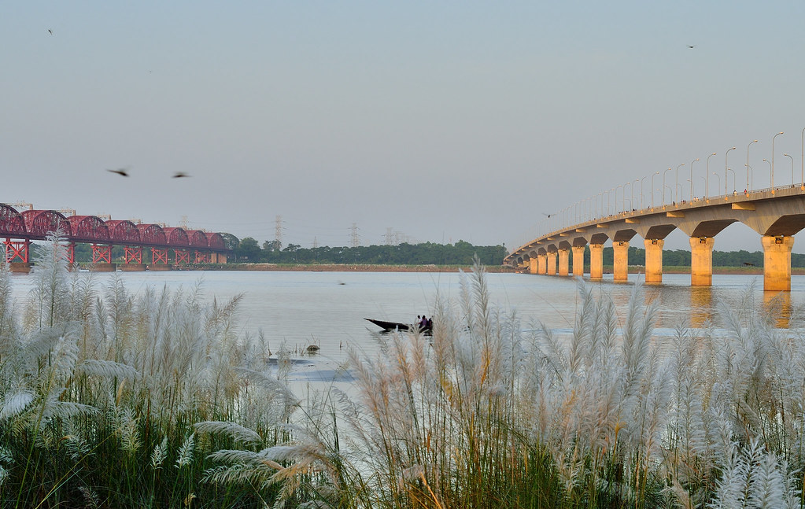

Bangladesh Agricultural Research Institute

Bangladesh Agricultural Research Institute (BARI) is an autonomous organization under the Ministry of agriculture, that conducts research on all crops except rice, jute, sugarcane, and tea for which there are separate institutes.
Bangladesh Sugarcrop Research Institute
Bangladesh Sugarcrop Research Institute (BSRI) or BSRI, is an autonomous national research institute that carries out research on sugarcane and other related plants. It is located in Ishwardi Upazila, Pabna, Bangladesh. It falls under the ministry of agriculture.
Rooppur Nuclear Power Plant

Rooppur Nuclear Power Plant is an under-construction 2.4 GWe nuclear power plant in Bangladesh. The nuclear power plant is being constructed at Rooppur (Rupppur), adjoining Paksey, in the Ishwardi Upazila of Pabna District, on the bank of the river Padma, 87 miles (140 km) west of Dhaka, in the northwest of the country. It will be the country's first nuclear power plant, and the first of two units are expected to go into operation in 2023. It is being built by the Russian Rosatom State Atomic Energy Corporation.
Popular aticles

Hardinge Bridge is a steel railway bridge over the river Padma located at Paksey, Ishwardi, Pabna in western Bangladesh. It is named after Lord Hardinge, who was the Viceroy of India from 1910 to 1916. The bridge is 1.8 kilometres (1.1 mi) long.
Lalon Shah Bridge, locally known as Pakshey Bridge is a road bridge in Bangladesh over the river Padma, situated between Ishwardi Upazila of Pabna on the east, and Bheramara Upazila of Kushtia on the west. Named after early 19th-century mystic poet Lalon Shah of Chhewuriya, Kushtia District, the bridge was completed in 2004.

From 1878, the railway route from Kolkata, then called Calcutta, to Siliguri was in two laps. The first lap was a 185 km journey along the Eastern Bengal State Railway from Calcutta Station (later renamed Sealdah) to Damookdeah Ghat on the southern bank of the Padma River, then across the river in a ferry and the second lap of the journey. A 336 km metre gauge line of the North Bengal Railway linked Saraghat on the northern bank of the Padma to Siliguri. It was during this period that Iswardi came up as a railway station.

The Prime Minister recently inaugurated the country’s fifth Export Processing Zone (EPZ) at Ishurdi. The Ishurdi EPZ (IEPZ) being set up on 308.77 acres of land will offer 166 small and medium-scale industrial plots and create jobs for about 20,000 people.
The projected investment in the IEPZ, located 160-km off the Bangabandhu Bridge, is around $36.5 million while the targeted amount of exports is $57.60 million.